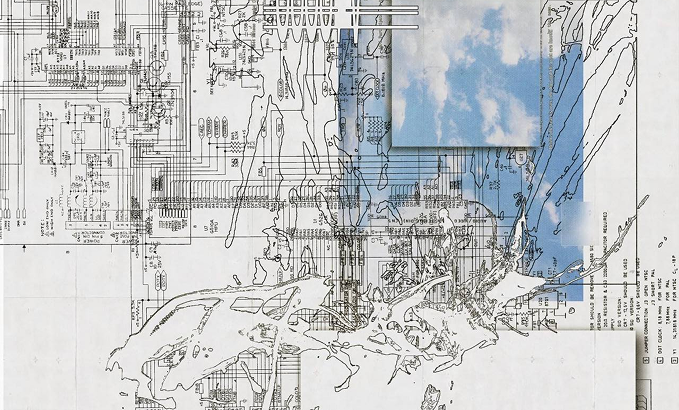
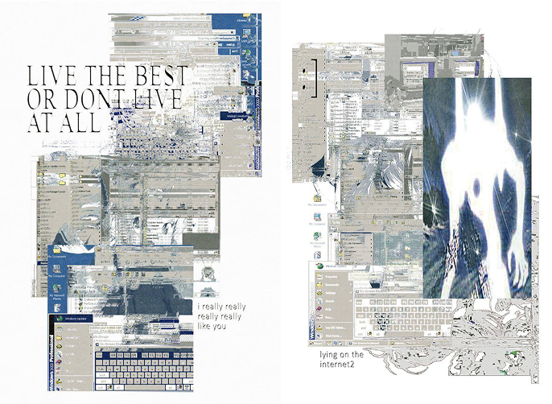
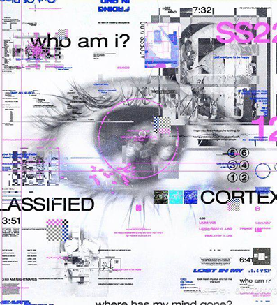

Приложение, создающее не просто анимацию,
а организованный хаос
TOUCHDESIGNER

В современном мире цифровых технологий дизайнеры и художники всё чаще используют интерактивные инструменты для создания визуальных проектов. Одной из таких программ является TouchDesigner — мощная среда для разработки интерактивной графики, визуальных эффектов и мультимедийных инсталляций.
TouchDesigner позволяет создавать графику, анимацию и интерактивные проекты в режиме реального времени. Программа основана на системе нод (узлов), где каждый элемент выполняет определённую функцию: обработку изображения, генерацию графики, работу со звуком, данными или взаимодействием с внешними устройствами. Такой подход позволяет пользователям строить сложные визуальные системы без необходимости писать большое количество кода.
Программа была создана для создания мультимедийных инсталляций, сценических визуализаций, генеративной графики, а также для разработки проектов в области виртуальной и дополненной реальности.
TouchDesigner может быть полезен дизайнерам, художникам и разработчикам благодаря своей гибкости и широкому набору инструментов. Кроме того, она позволяет интегрировать различные технологии, такие как датчики движения, камеры, звук и другие внешние устройства.
Несмотря на многочисленные преимущества, TouchDesigner имеет и некоторые недостатки. Одним из них является довольно высокий порог входа для начинающих пользователей, поскольку освоение нодовой логики требует времени и практики. Также программа может требовать достаточно мощного компьютера для работы со сложными визуальными проектами. Кроме того, профессиональная версия программы является платной.


Интерактивность существенно расширяет возможности дизайнеров, позволяя создавать проекты, которые реагируют на зрителя, звук, движение и другие внешние факторы. Это открывает новые направления в визуальном искусстве, сценографии, рекламе и цифровых инсталляциях.
Несмотря на некоторые сложности в освоении, программа предоставляет широкие возможности для творческой реализации и активно используется в современном цифровом искусстве и дизайне. Её значение в индустрии продолжает расти по мере развития технологий и увеличения интереса к интерактивным визуальным решениям.